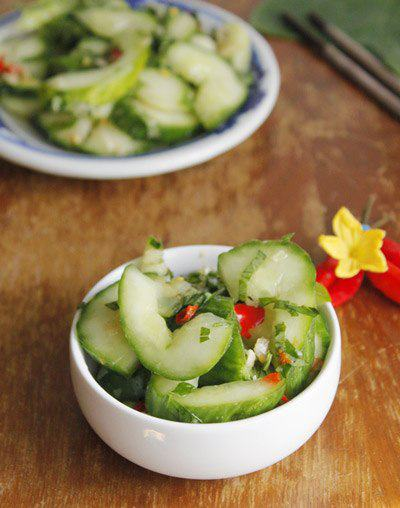

Cùng bắt tay làm thử thôi nào!
Nguyên liệu:
- Dưa leo
- Tỏi, nước mắm, đường, ớt quả, chanh (định lượng tùy theo sở thích của bạn)
- Rau thơm.
Cách làm:
Bước 1:- Dưa leo rửa sạch, bỏ hết ruột.
Bước 2:- Thái dưa leo thành từng lát xéo vừa ăn.
Bước 3:- Trộn vào bát dưa leo một ít muối, dùng tay sạch, trộn đều, để khoảng 15 - 30 phút.
- Tiếp theo dùng tay sạch vắt nhẹ để dưa leo ra bớt hết nước. Để dưa leo vào thố sạch.
Bước 4:- Tỏi, ớt, đường, giã nhuyễn.
Bước 5:- Tiếp theo trộn tỏi, ớt đã giã nhuyễn, thêm nước mắm, vắt vào vài giọt chanh, trộn đều, nêm nếm lại tùy theo sở thích của bạn.
Bước 6:- Rau thơm rửa sạch, thái nhỏ.
- Cuối cùng trộn rau thơm đã thái nhỏ, trộn đều, múc ra dĩa.